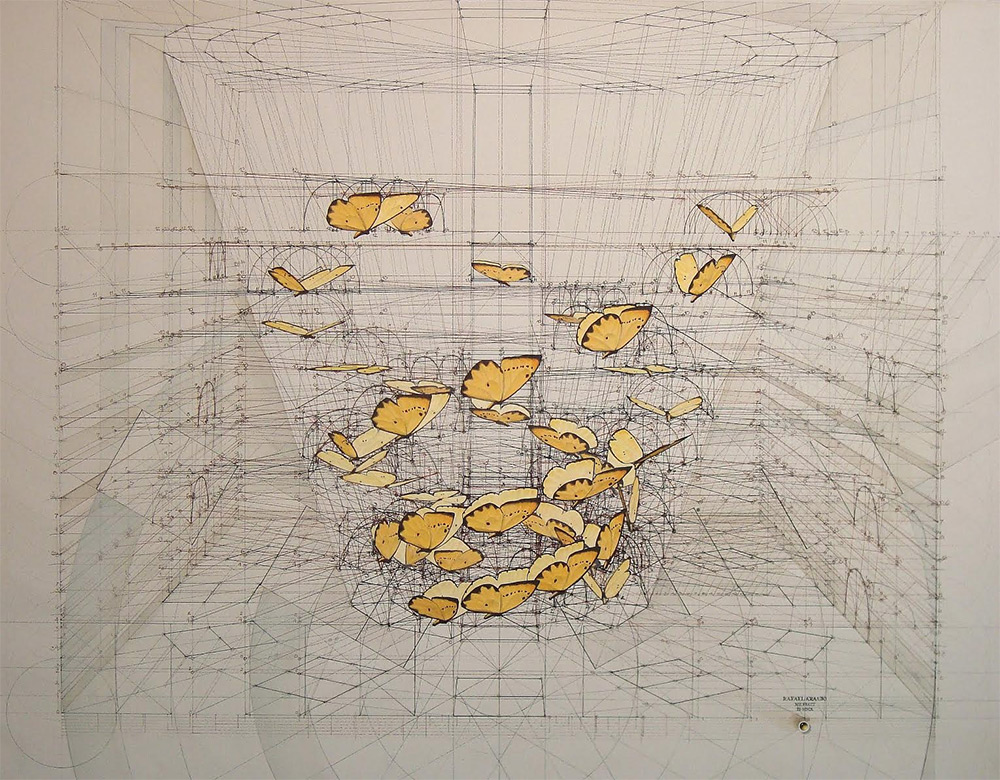
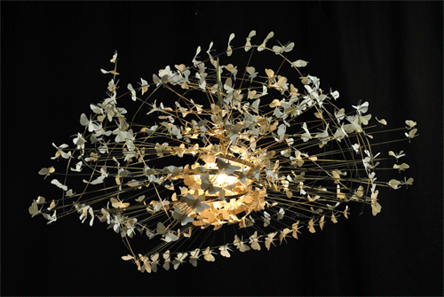
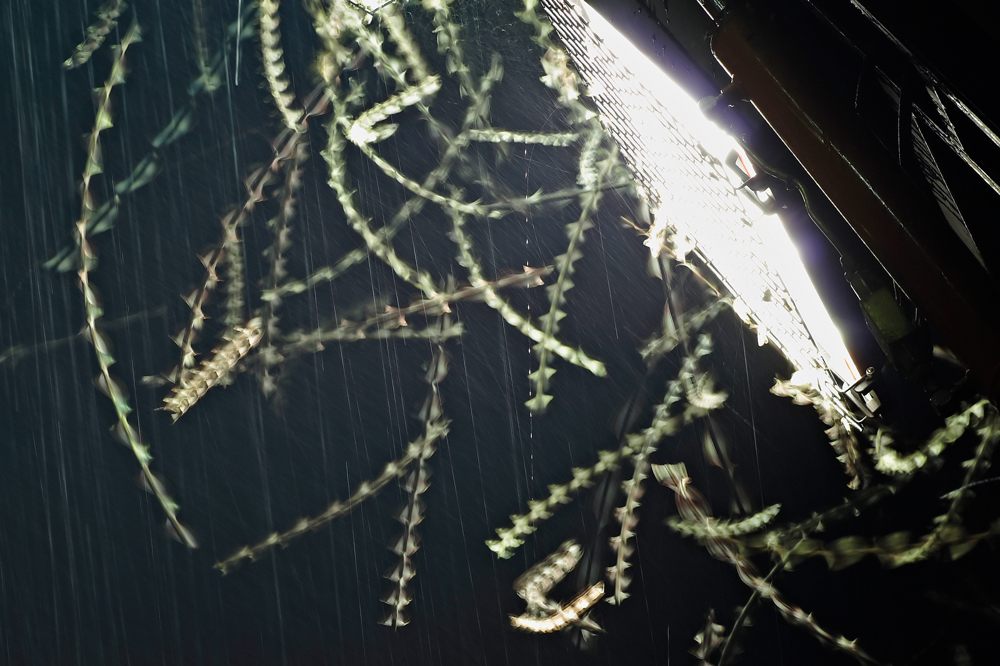
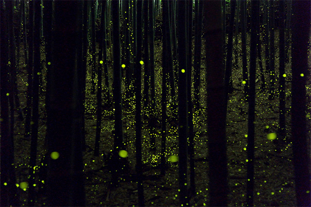
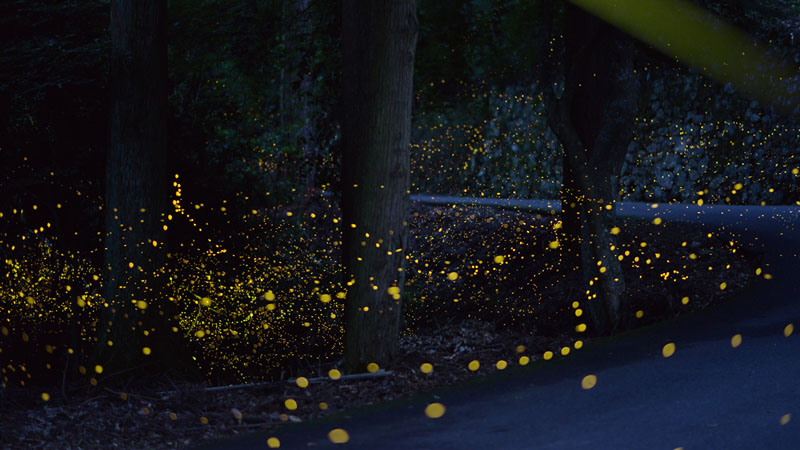
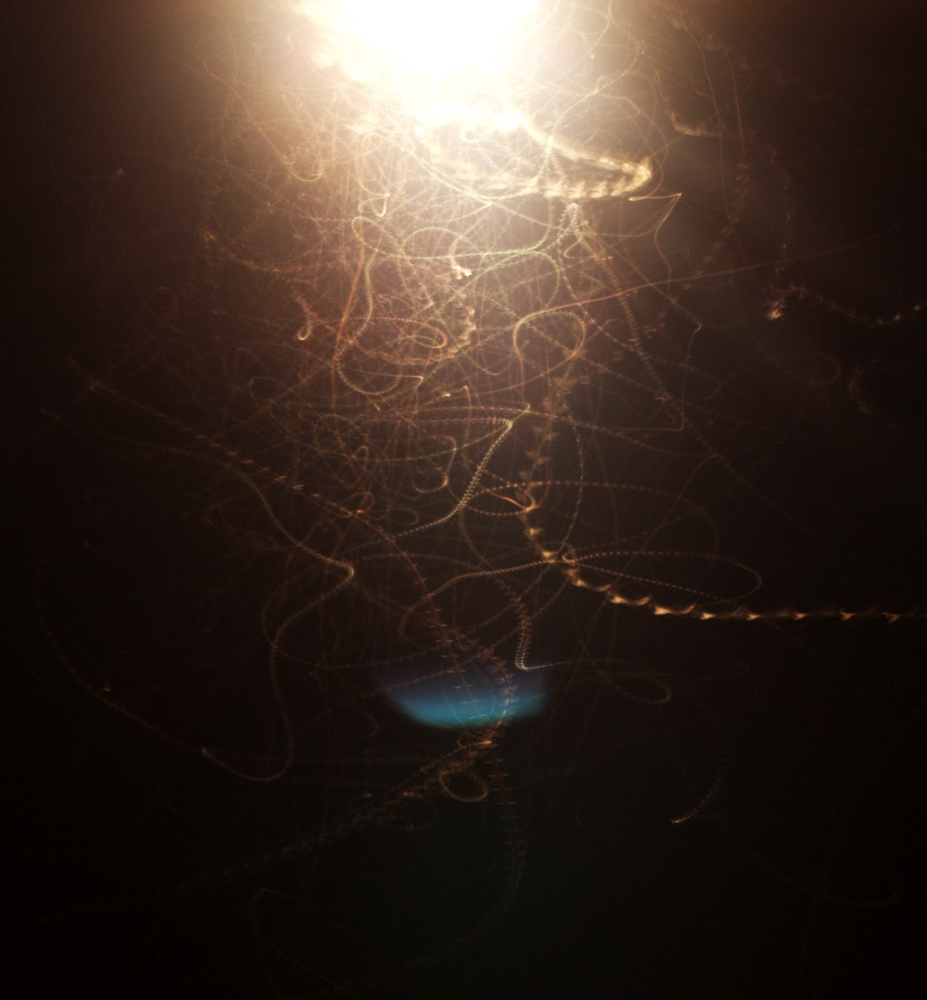
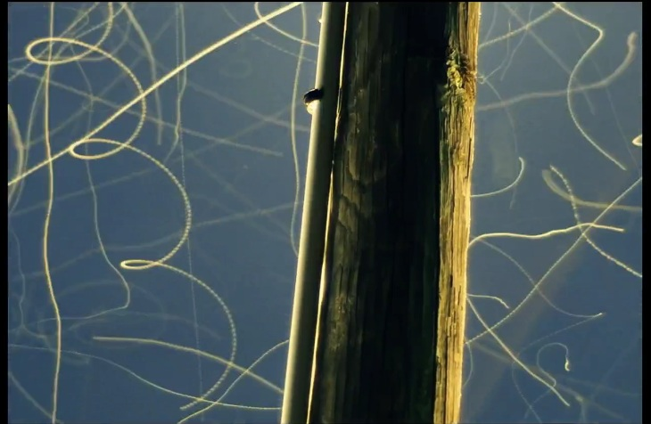

|
V

The miller's wife had waited long,
The tea was cold, the fire was dead;
And there might yet be nothing wrong
In how he went and what he said:
"There are no millers any more,"
Was all that she had heard him say;
And he had lingered at the door
So long that it seemed yesterday.
 
Sick with a fear that had no form
She knew that she was there at last;
And in the mill there was a warm
And mealy fragrance of the past.
What else there was would only seem
To say again what he had meant;
And what was hanging from a beam
Would not have heeded where she went.



And if she thought it followed her,
She may have reasoned in the dark
That one way of the few there were
Would hide her and would leave no mark:
Black water, smooth above the weir
Like starry velvet in the night,
Though ruffled once, would soon appear
The same as ever to the sight.
 